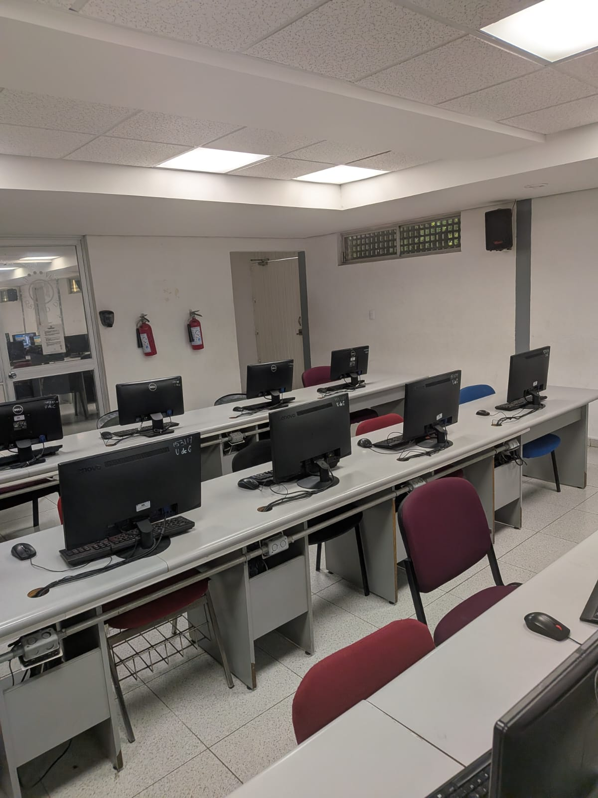
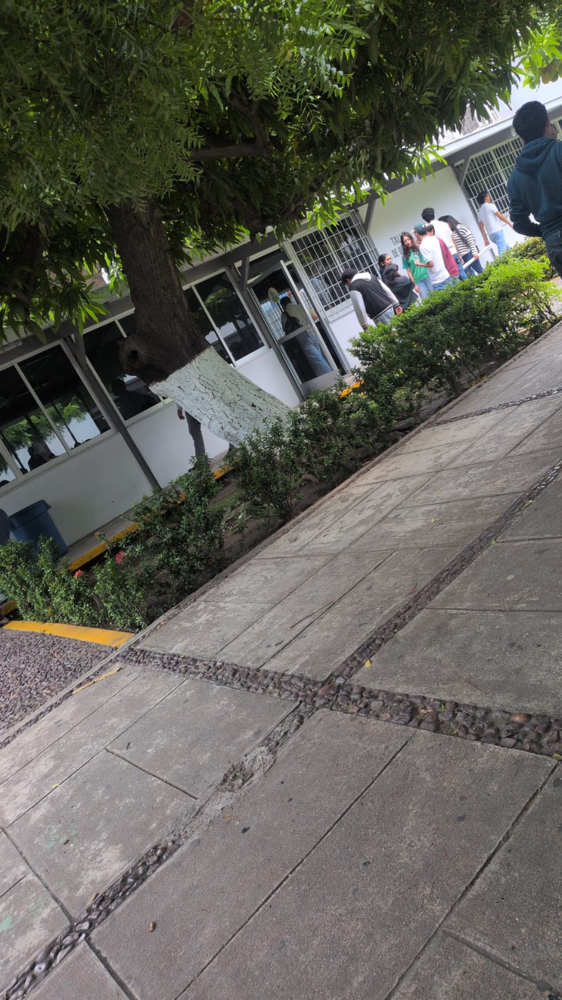
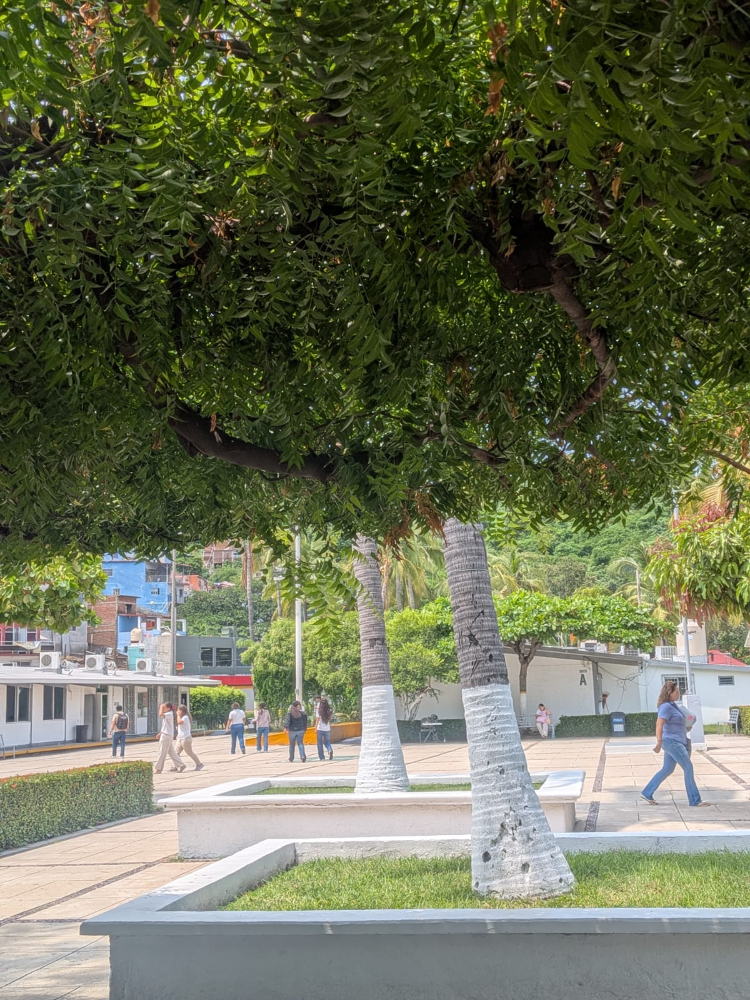
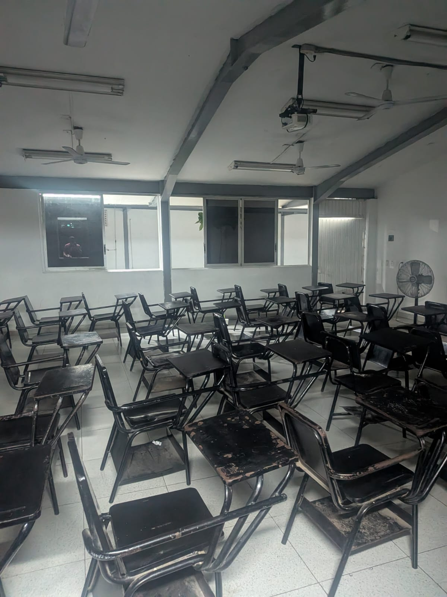
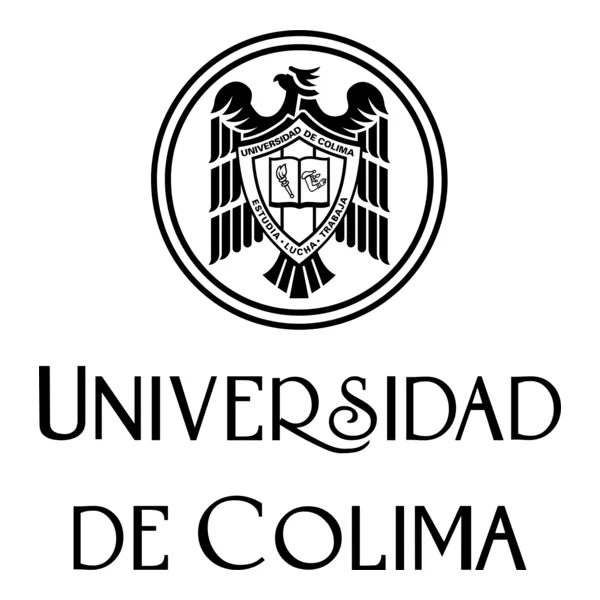

Oscar Andres Espinoza Ramirez
5B
Programación en Internet I
Bachillerato 8
Universidad de Colima
Comenzó sus labores académicas el 28 de septiembre de 1976, bajo la rectoría de Alberto Herrera Carrillo y con la ayuda de José Albirde Martínez quién fungió como director del plantel; en ese momento se ofertaban las carreras técnicas de químico-biólogo, físico-matemático y económico-administrativo.
A lo largo de sus 46 años de fundación estos han sido los directores que han aportado con sus conocimientos al desarrollo y crecimiento del plantel.
Actualmente el bachillerato se encuentra a cargo del C. P. Víctor Pedro Gutiérrez Matus con un total de 18 grupos: 6 de tronco común, 4 de Bachillerato General, 4 de Contabilidad, 2 de Analista Programador y 2 de Dibujo, con una matrícula de más de 700 alumnos.
"Brindar servicios educativos del tipo medio superior, en sus distintas modalidades, que aseguren la formación integral de los estudiantes y el impulso a la creación, la aplicación, la preservación y la difusión del conocimiento científico, al desarrollo tecnológico, así como a las distintas manifestaciones del arte y la cultura, para contribuir a la transformación de la sociedad, en un marco de transparencia y oportuna rendición de cuentas."




